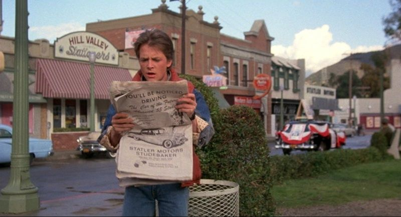
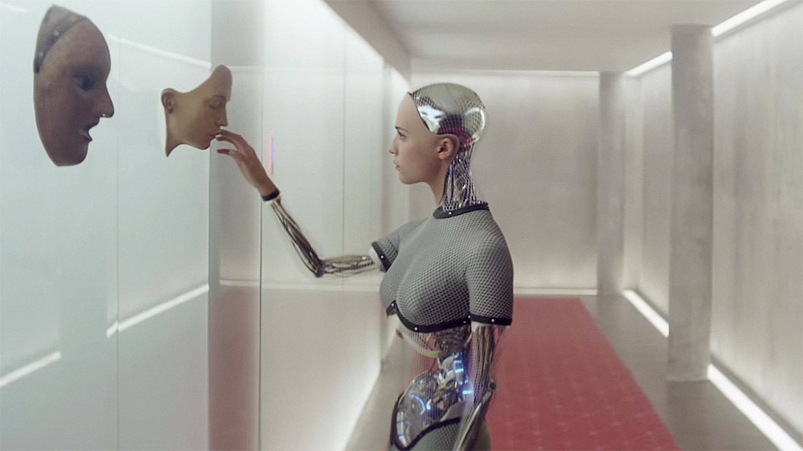
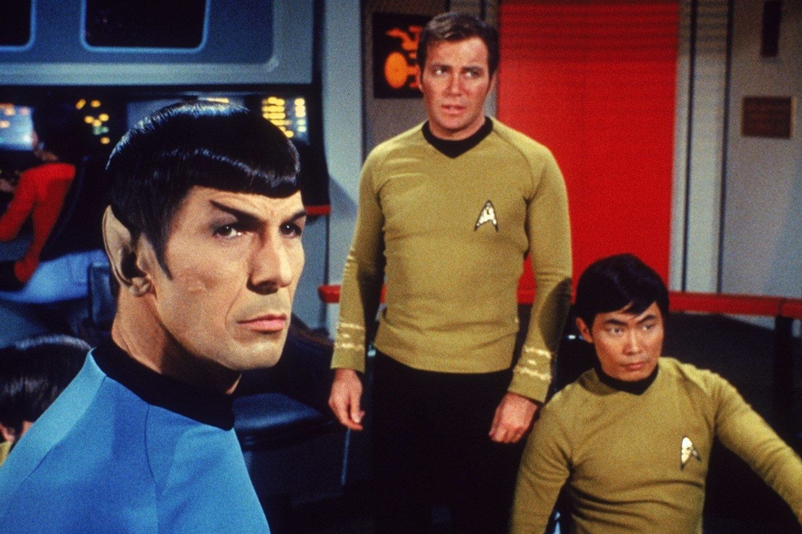

Back to the Future, Ex Machina, Star Trek. Great movies you should watch.
|  |
Back to the FutureIn this 1980s sci-fi classic, small-town California teen Marty McFly (Michael J. Fox) is thrown back into the '50s when an experiment by his eccentric scientist friend Doc Brown (Christopher Lloyd) goes awry. Traveling through time in a modified DeLorean car, Marty encounters young versions of his parents (Crispin Glover, Lea Thompson), |
|  |
Ex MachinaCaleb Smith (Domhnall Gleeson) a programmer at a huge Internet company, wins a contest that enables him to spend a week at the private estate of Nathan Bateman (Oscar Isaac), his firm's brilliant CEO. When he arrives, Caleb learns that he has been chosen to be the human component in a Turing test to determine the capabilities and consciousness |
|  |
Star TrekStar Trek is an American media franchise based on the science fiction television series created by Gene Roddenberry. The first television series, simply called Star Trek and now referred to as "The Original Series", debuted in 1966 and aired for three seasons on the television network NBC. It followed the interstellar adventures of Captain James T. |